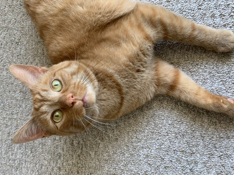
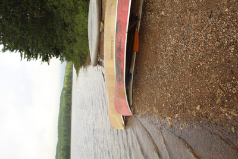
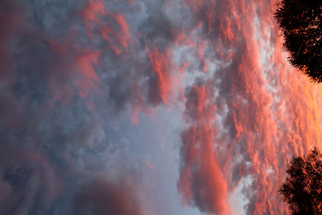
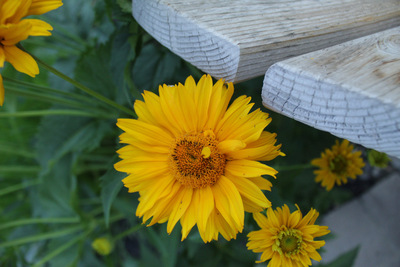

This photograph is a wild tiger found in his natual habitat... the couch! He is my lazy, albeit clingy, child.
This photograph is a wild tiger found in his natual habitat... the couch! He is my lazy, albeit clingy, child.

My favourite form of photography; Landsacpe. Taken in Algonquin park. I think we can all agree camping is a superior way to live.
Algonquin.
I used to imagine clouds like this were distant avalanche's and I was on a quest to escape it. Questionably considered landscape photography, however it brings me so much joy that I dedicate it to a category of itself.
sunset
Flowers bring me so much joy! Therefore Flower Power is golden. Can you guess what flower this is?
Flower Power.